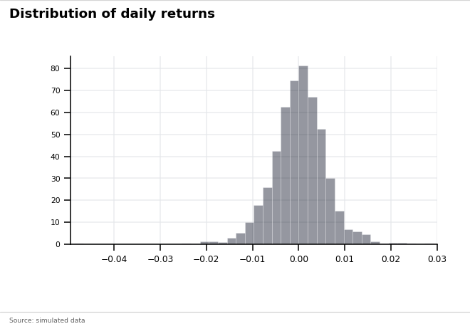
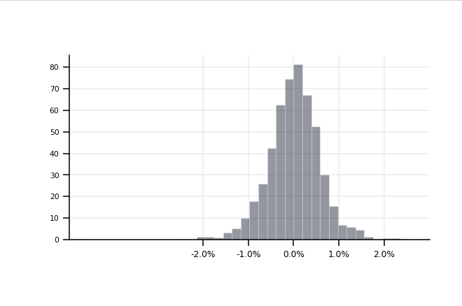
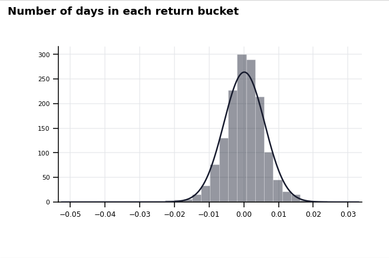
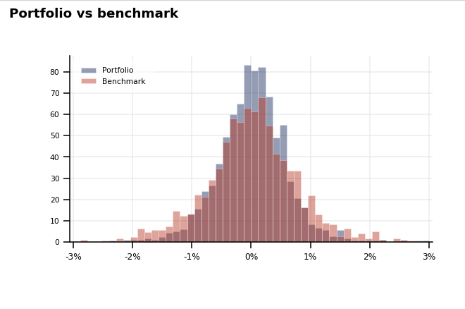
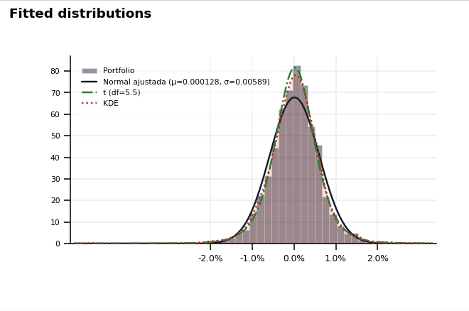
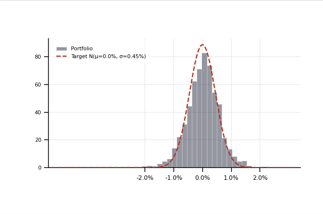
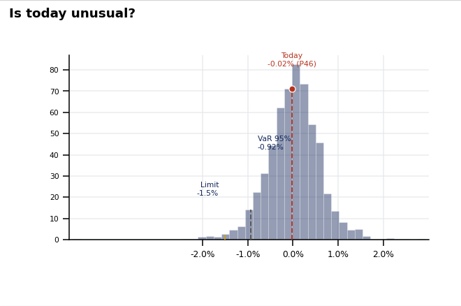
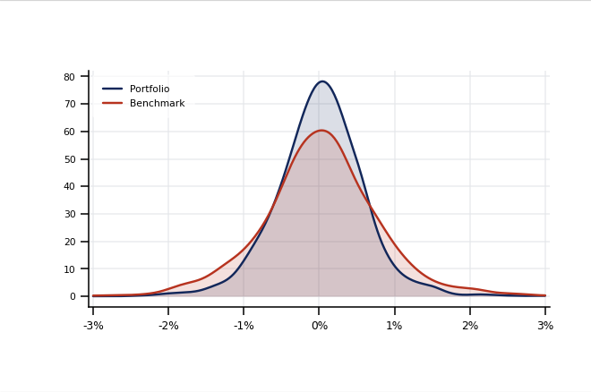

Distribution chart: graph_dist¶
graph_dist() draws a histogram of one or more series and can overlay probability curves: curves of a known distribution (you provide the parameters) and curves fitted to the data (parameters estimated from it, or a kernel density estimate). It can also highlight references on the distribution: the last observation, a specific date, a literal value (e.g. a VaR) or a statistic (mean, median, percentiles).
Typical question it answers: "Is today's return / spread / multiple unusual compared with its own history?"
Expected DataFrame¶
Each column is a series, and its values form the distribution. The index is only used to find observations ("last", a date) when you want to highlight them.
import numpy as np
import pandas as pd
import helpers_ps as hp
hp.set_graph_theme()
rng = np.random.default_rng(3)
dates = pd.bdate_range("2019-01-02", periods=1500)
returns = pd.DataFrame(
{
"Portfolio": rng.standard_t(5, len(dates)) * 0.0045 + 0.0004,
"Benchmark": rng.standard_t(5, len(dates)) * 0.0060 + 0.0003,
},
index=dates,
)
Portfolio Benchmark
count 1500.0000 1500.0000
mean 0.0001 0.0003
std 0.0059 0.0081
min -0.0487 -0.0340
max 0.0292 0.0513
Basic histogram¶
g = (
hp.GraphMtplt(returns)
.graph_dist(series=[{"ticker": "Portfolio", "label": "Portfolio daily returns"}], bins=40)
.config_yaxis(fmt=".0f")
.add_title("Distribution of daily returns")
.add_source("Source: simulated data")
)

By default the y-axis is a density (area = 1). With x_axis={"fmt": ".1%"} the values of the distribution axis (the x-axis) are shown as percentages, and tick_values chooses the tick positions.
g = (
hp.GraphMtplt(returns)
.graph_dist(
series=[{"ticker": "Portfolio"}],
bins=40,
x_axis={"fmt": ".1%", "tick_values": [-0.02, -0.01, 0, 0.01, 0.02]},
)
.config_yaxis(fmt=".0f")
)

tick_step on a distribution axis
On a distribution axis tick_step is expressed in axis units and must be an integer (e.g. tick_step=10 for a spread in basis points). For fractional steps, as with returns, list the ticks in tick_values.
Count or probability instead of density¶
stat accepts "density" (default), "count" or "probability" (the bar heights sum to 1). Curves are rescaled to the same unit.
g = (
hp.GraphMtplt(returns)
.graph_dist(series=[{"ticker": "Portfolio"}], bins=30, stat="count", fit="norm")
.config_yaxis(fmt=",.0f")
.add_title("Number of days in each return bucket")
)

Compare two distributions¶
With several series, common_bins=True (default) uses the same bin edges so the bars are comparable. The histogram transparency is hist_alpha (default 0.45).
g = (
hp.GraphMtplt(returns)
.graph_dist(
series=[
{"ticker": "Portfolio", "color": "#12275A"},
{"ticker": "Benchmark", "color": "#B7331F"},
],
bins=50,
x_range=(-0.03, 0.03),
x_axis={"fmt": ".0%"},
)
.config_yaxis(fmt=".0f")
.add_legend()
.add_title("Portfolio vs benchmark")
)

x_range=(min, max) restricts the data used (values outside are ignored); either side can be None.
Curves: fit and known¶
| Argument | Meaning | Where parameters come from |
|---|---|---|
fit |
Curves estimated from each series ("norm", "t", "lognorm", ... any scipy.stats name, or "kde"). |
Estimated from the data. |
known |
Curves of a known distribution you specify. | You provide params. |
Both accept a name, a dictionary, a DistCurveConfig, or a list mixing them. Examples:
g = (
hp.GraphMtplt(returns)
.graph_dist(
series=[{"ticker": "Portfolio"}],
bins=45,
fit=[
"norm",
{"dist": "t", "color": "#2E7D32", "linestyle": "-.", "label_template": "t (df={df:.1f})"},
{"dist": "kde", "fill": True, "color": "#B7331F", "label_template": "KDE"},
],
x_axis={"fmt": ".1%", "tick_values": [-0.02, -0.01, 0, 0.01, 0.02]},
)
.config_yaxis(fmt=".0f")
.add_legend()
.add_title("Fitted distributions")
)

A known curve is useful for the "what the model assumes" comparison, e.g. a normal with the target volatility of a mandate:
g = (
hp.GraphMtplt(returns)
.graph_dist(
series=[{"ticker": "Portfolio"}],
bins=45,
known={
"dist": "norm",
"params": {"loc": 0.0, "scale": 0.0045},
"color": "#B7331F",
"linestyle": "--",
"label_template": "Target N(μ={mu:.1%}, σ={sigma:.2%})",
},
x_axis={"fmt": ".1%", "tick_values": [-0.02, -0.01, 0, 0.01, 0.02]},
)
.config_yaxis(fmt=".0f")
.add_legend()
)

Curve options¶
| Key | Description |
|---|---|
dist |
scipy.stats name ("norm", "t", "lognorm"...) or "kde" (only in fit). In known it can also be a frozen scipy distribution or a callable pdf(x). |
params |
(known) dict ({"loc": 0, "scale": 1}) or tuple of positional parameters. Omitted = scipy defaults. |
fit_kwargs |
(fit) extra arguments of dist.fit, e.g. {"floc": 0}. |
bw_method |
(kde) bandwidth rule or factor. |
color, linewidth (lw), linestyle (ls), alpha, zorder |
Line style. |
label / label_template |
Fixed legend text, or a template with {series}, {ticker}, {dist}, {dist_key}, {kind}, {params}, {n}, every parameter by name ({loc}, {scale}, {df}...), {mu}, {sigma} and {bandwidth} (kde). |
legend |
False hides the curve from the legend. |
param_fmt, param_sep |
Format and separator used by {params} (defaults ".3g" and ", "). |
fill |
True or {"color", "alpha", "zorder", "hatch"}. |
line_kwargs |
Any extra Axes.plot argument. |
The same curve can be written with the dataclass:
from helpers_ps.MtpltGraph.models import DistCurveConfig
fit=[DistCurveConfig("t", color="#2E7D32", linestyle="-."), DistCurveConfig("kde", fill=True)]
Default legend names are in Spanish
Fitted / theoretical curves get an automatic legend such as Normal ajustada (μ=..., σ=...) ({kind} is ajustada or teórica). Use label or label_template to write your own text.
One default for every series
fit and known set at function level apply to every series that does not define its own. Inside a series, fit=[] / known=[] disables them for that series only.
Highlight references (VaR, last return, percentiles)¶
Each series accepts a tag list. Every item is a reference that can draw a vertical line, a text tag and a dot (show combines "line", "tag" and "dot", e.g. "line_tag", "line_tag_dot").
A reference is selected with one of three modes (inferred if omitted):
mode |
Key | Meaning |
|---|---|---|
"observation" |
x_values |
The value the series takes at "last", "first" or any index label (a date). |
"value" |
value |
A literal number (or list) on the distribution axis, e.g. a VaR you computed. |
"statistic" |
statistic |
"mean", "median", "q1", "q3", "min", "max" or a percentile "p5", "p95" (any p<N>, 0-100). Accepts a list. |
Template fields (template, legend_label): {ticker}, {label}, {x_value}, {value} ({y_value}), {statistic}, {percentile} (empirical rank 0-100), {zscore} and {density}. Default template: "{value:,.4g}\nP{percentile:.0f}".
g = (
hp.GraphMtplt(returns)
.graph_dist(
series=[{
"ticker": "Portfolio",
"label": "Daily return",
"color": "#12275A",
"tag": [
# last observation of the series, with its percentile
{
"x_values": "last",
"show": "line_tag_dot",
"template": "Today\n{value:.2%} (P{percentile:.0f})",
"line": {"color": "#B7331F", "linewidth": 1.2},
"dot": {"color": "#B7331F", "size": 35},
"tag": {"font_color": "#B7331F", "fontsize": 7, "ubic_etq": (0, 20)},
},
# the 5th percentile (historical 95% VaR)
{
"statistic": "p5",
"show": "line_tag",
"template": "VaR 95%\n{value:.2%}",
"line": {"color": "#555555", "linestyle": "--"},
"tag": {"fontsize": 7, "ubic_etq": (6, 55), "label_h_align": "left"},
},
# a literal value: the mandate's loss limit
{
"value": -0.015,
"show": "line_tag",
"template": "Limit\n{value:.1%}",
"line": {"color": "#C9A227"},
"tag": {"fontsize": 7, "ubic_etq": (-6, 35), "label_h_align": "right"},
},
],
}],
bins=45,
x_axis={"fmt": ".1%", "tick_values": [-0.02, -0.01, 0, 0.01, 0.02]},
)
.config_yaxis(fmt=".0f")
.add_title("Is today unusual?")
)

Reference options:
| Key | Default | Description |
|---|---|---|
mode, x_values, value, statistic |
inferred | Selection (see above). |
show |
"line_tag" |
Combination of line, tag, dot. |
template, legend_label |
see above | Text of the tag / legend entry. |
y_from |
"auto" |
Height used to anchor dots and tags: "hist" (bar height), "curve" (first curve) or "auto". |
line |
none | extent ("curve" or "top"), color, linestyle, linewidth, alpha, zorder. |
tag |
none | Arguments of tag(). |
dot |
none | Arguments of dot(). |
Only the curves¶
hist=False hides the histogram of a series (at least one curve is then required). It is a clean way to compare shapes:
g = (
hp.GraphMtplt(returns)
.graph_dist(
series=[
{"ticker": "Portfolio", "hist": False, "color": "#12275A"},
{"ticker": "Benchmark", "hist": False, "color": "#B7331F"},
],
fit=[{"dist": "kde", "fill": True, "label_template": "{series}"}],
x_range=(-0.03, 0.03),
x_axis={"fmt": ".0%"},
)
.config_yaxis(fmt=".0f")
.add_legend()
)

Parameters¶
| Parameter | Default | Description |
|---|---|---|
series |
all numeric columns | List of dicts / DistSeriesConfig: ticker, label, color, hist, known, fit, tag. |
df_index |
0 |
DataFrame to use. |
bins |
"auto" |
Anything accepted by numpy.histogram_bin_edges: an integer, a rule ("auto", "fd") or explicit edges. |
stat |
"density" |
"density", "count" or "probability". |
common_bins |
True |
Same bin edges for all series. |
hist_alpha, hist_edgecolor, hist_linewidth |
0.45, "white", 0.4 |
Bar style. |
hist_style |
None |
Extra Axes.hist arguments, e.g. {"histtype": "step"}. |
known, fit |
None |
Default curves for all series. |
curve_points |
400 |
Resolution of the curves (>= 20). |
x_range |
None |
(min, max) of the data used. |
lw |
1.6 |
Default width of curves. |
x_axis |
None |
Distribution-axis format: fmt, tick_step (integer, axis units), tick_values, tick_labels, fontsize, rotation, lim... plus fontweight, fontstyle, tick_color, spine_color, axis_label, axis_label_fontsize, axis_label_color when passed as a dictionary. bbg_format is not allowed. |
Full signature: API reference.
Typical use cases¶
- Distribution of daily / monthly returns with VaR and the last observation.
- Tracking error or active-return distribution against a limit.
- Historical distribution of a spread, multiple or yield with today's percentile.
- Comparing return distributions of two strategies.